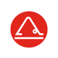

Warm-up
-
Mermaid Stretch
-
Arm Circles with Forward Reach
-
Push-Up & Leg Reach
-
Roll-Down
수업자료는 수업 당일 12시에 공개됩니다.

체어와 캐딜락으로 살피는 지지, 체중 이동, 회전
두 세션 모두 수강 · 팀별 순서 교차
지지가 바뀌어도 힘의 흐름은 끊기지 않게.
기구 세팅 · 흰색 스프링 4층 2개. 페달 분리 후 시작.
Stick-Supported Pedal Press
Pedal Press with Stick Reach
Plank Pedal Press
Handle-Supported Single-Leg Pedal Press
Hands-Free Hip Hinge
Reverse Lunge → Forward Step-Up
Side Pull-Up
Leg Pull Front · 6 reps
Snake with One Hand on the Pedal and One on the Mat
페달 스틱 연결 후 흰색 스프링 3층 2개로 변경.
Frog Bridge
Frog Bridge → Pedal Press → Roll-Down
Pedal Press → Articulated Bridge → Pedal Lift
Single-Leg Stretch
Leg Circles
Roll Over to Jackknife → Spinal Roll-Down
무릎 지지에서 플랭크로, 손잡이 지지에서 한 다리 지지로. 지지가 바뀌는 순간 체중이 어디로 옮겨가는지 봅니다.
이 수업에서 전신 통합은 몸을 한 덩어리로 고정하는 것이 아닙니다. 지지하는 곳이 바뀔 때 체중을 어디로 얼마나 빠르게 옮기는지, 팔다리를 더 움직일 때 몸통이 어떻게 함께 조절되는지를 보는 것입니다.
Kneeling to Plank Pedal Press에서는 스틱에 손을 댄 상태, 스틱을 뻗는 상태, 플랭크를 비교합니다. 페달을 누르는 일은 같지만, 손과 무릎·발이 몸을 받치는 방식이 달라집니다.
Reverse Lunge에서 Forward Step-Up으로 갈 때, 앞발에 체중이 실리는 순간을 먼저 봅니다. 몸을 높이 올리는 것보다 내려갈 때도 속도를 조절하는지가 관찰 기준입니다.
Frog Bridge Series에서는 발이 페달을 누르는 움직임과 척추가 순서대로 굴러가는 움직임을 구분해서 봅니다. 두 동작을 연결할 때도 페달이 갑자기 튀어 오르지 않는지 살핍니다.
연구 결과 · 단순 역진자 모델에서 움직이는 동안의 균형을 설명할 때, 몸의 질량중심이 지지면에 대해 어디에 있는지뿐 아니라 얼마나 빠르게 움직이는지도 포함했습니다. 서기와 걷기 자료를 예로 제시했습니다.
수업 적용 · Reverse Lunge → Forward Step-Up에서 앞발에 체중이 실리는 시점과 올라가고 내려오는 속도를 함께 봅니다. 이 모델을 체어의 균형 판정 공식으로 쓰지는 않습니다.
연구 결과 · 필라테스 경험이 있는 여성 16명이 운다 체어에서 Going Up Front와 Mountain Climb을 수행했습니다. 측정한 발이 좌판과 페달 중 어디에 놓였는지에 따라 허벅지 앞·뒤 근육의 근전도 양상이 달랐습니다.
수업 적용 · Standing Leg Series에서 체중을 받는 발과 페달을 움직이는 발의 역할을 나눠 봅니다. 연구 동작을 이번 시퀀스와 동일시하거나, 스프링 단수를 정하는 근거로 쓰지 않습니다.
아래 연구는 개별 과제의 역학 모델 또는 단기 근전도 관찰입니다. 이번 #10 시퀀스를 직접 검증한 연구는 아니며, 근전도 차이는 근력 향상이나 기구의 우열을 뜻하지 않습니다.
Lunge
Cross Lunge
Narrow / Wide
Single Spring
Leg
Arm
Leg + Arm
Leg + Arm + Rotation
Row & Lift
Spine Circle
Pike
Snake
다리, 팔, 회전을 하나씩 더한 뒤 매트로 옮겨갑니다. 기구가 달라질 때도 어디에 기대고 어디를 움직이는지 살핍니다.
이 수업에서 전신 통합은 몸을 한 덩어리로 고정하는 것이 아닙니다. 지지하는 곳이 바뀔 때 체중을 어디로 얼마나 빠르게 옮기는지, 팔다리를 더 움직일 때 몸통이 어떻게 함께 조절되는지를 보는 것입니다.
Push Bar Series는 다리와 팔을 따로 써본 뒤 같이 쓰고, 마지막에 회전을 더합니다. 무엇이 추가되는 순간 바의 경로와 몸의 지지가 달라지는지 비교합니다.
Mat Plank와 Mat Push-Up에서는 바 대신 바닥에 닿는 손과 발이 기준이 됩니다. 팔꿈치가 굽고 펴질 때 몸통과 다리가 어떤 속도로 함께 움직이는지 봅니다.
Push Bar Teaser와 Circle Teaser는 기구가 다릅니다. 높이나 모양을 똑같이 맞추기보다, 올라가고 내려올 때 팔다리와 몸통의 타이밍을 살핍니다.
연구 결과 · 건강한 참가자가 팔을 최대한 빠르게 들어 올리는 실험에서, 어깨 근육이 활성화되기 전에 다리·골반·몸통 근육의 근전도 변화가 관찰됐습니다. 변화의 양상은 팔 과제에 따라 달랐습니다.
수업 적용 · Push Bar Series에서 다리, 팔, 둘을 함께, 회전까지 순서대로 더할 때 지지하는 부위가 언제 달라지는지 봅니다. 빠른 팔 들기 실험을 느린 필라테스 동작의 고정된 근육 순서로 적용하지 않습니다.
연구 결과 · 여성 16명이 매트·캐딜락·콤보 체어에서 티저를 수행했습니다. 측정한 복직근과 외복사근의 근전도는 기구와 동작 구간에 따라 달랐습니다.
수업 적용 · Push Bar Teaser와 Circle Teaser에서 같은 높이를 목표로 하기보다, 올라갈 때와 내려올 때 몸통과 팔다리의 타이밍을 각각 비교합니다. 이 연구가 두 변형을 직접 비교한 것은 아닙니다.
아래 연구는 개별 과제의 역학 모델 또는 단기 근전도 관찰입니다. 이번 #10 시퀀스를 직접 검증한 연구는 아니며, 근전도 차이는 근력 향상이나 기구의 우열을 뜻하지 않습니다.
수업 영상 공유를 위해, 수업 전에 아카이브 공식 홈페이지에 가입해 주세요.